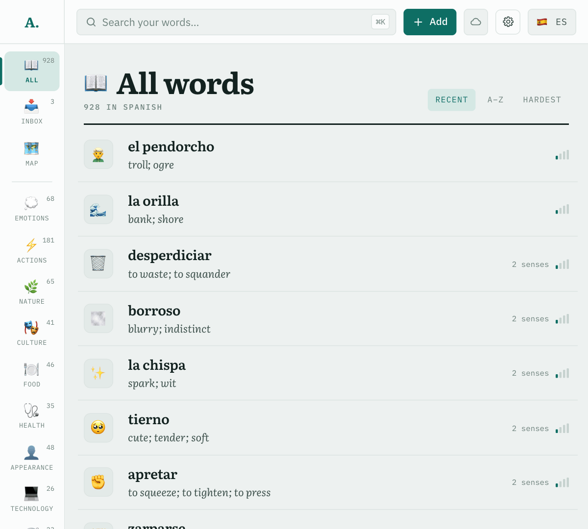
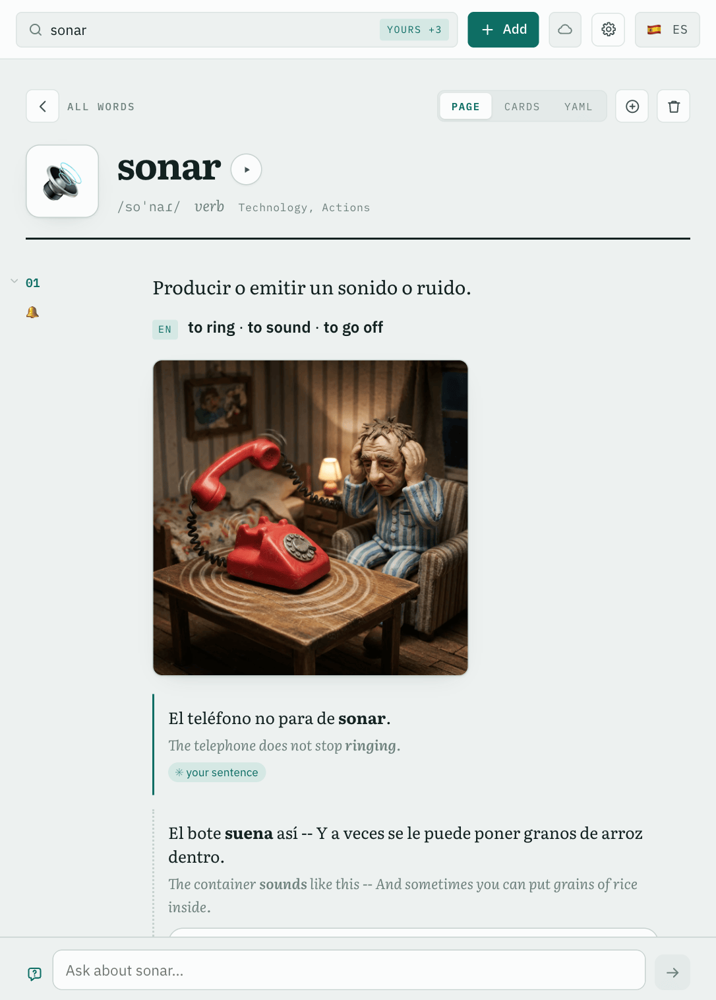
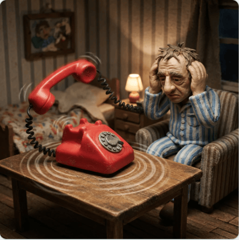
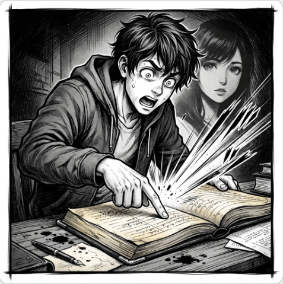
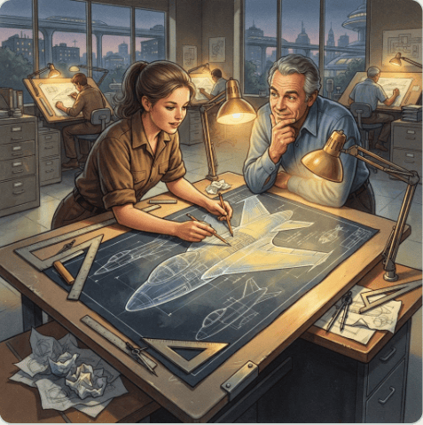

Three meanings, and a picture for each

claymation🔔 01 sound
to ring, to go off

manga-panel🧠 02 memory
to ring a bell, to sound familiar

retro-futurism💡 03 impression
to sound, to seem
Generated, then yours
🌐 any language→🌐 any language
All the content is generated: entries are written for your level and to your own standing instructions. You review each one, edit it, or ask for changes in the chat under it.From the same words
- recordings
- clips of native speech
- audio loops
- illustrated stories
- a map of meanings
- words from a photo
- Anki cards
- offline on every device